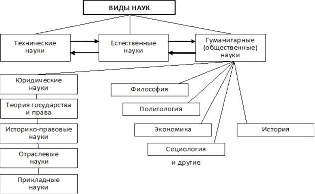

- Предмет и функции Теория государства и права (ТГП).
- Метод и методология ТГП
- Теория государства и права в системе юридических и гуманитарных наук
1. Предмет и функции Теория государства и права (ТГП).
ТГП – это юридическая наука, изучающая закономерности возникновения, развития системной организации и функционирования государства и права и связанных с ними социальных явлений
Наука ТГП – это сфера деятельности, функция которой является выработка и теоретическая систематизация объективных знаний действительности.
Предмет ТГП:
- Общие закономерности возникновения и развития государства;
- Государственно-правовые явления;
- Представления людей на процессы и явления – правосознание, т.е. отношение к этим явлениям;
- Правовые понятия и категории;
- Правомерное поведение;
- Правонарушения и юридическая ответственность;
- Законодательный процесс и его отдельные стадии
Объект ТГП – это фактически вся существующая в той или иной стране государственно-правовая надстройка, включающая в себя государственные и правовые институты, правовые нормы, правоотношения, правопорядок, правотворчество, правоприменение.
Функции ТГП:
- онтологическая. Данная функция изучает государственно-правовые явления, анализирует их;
- прогностическая. Направлена на обеспечение наукой теории государства и права прогнозирования развития государства и права в будущем, выявление закономерностей развития и проблем, которые могут возникнуть в процессе;
- гносеологическая. Эта функция призвана обеспечить познание категорий государства и права, а также иных государственных и правовых явлений.
- С ее помощью осуществляется получение нужных знаний (при этом они толкуются с научных позиций);
- методологическая. При ее реализации теория государства и права выступает в качестве методологической основы для всех юридических наук, так как в процессе обобщения государственно-правовой практики она изучает методологические вопросы всей юридической науки, формирует базовые государственно-правовые понятия, выводы, основополагающие утверждения, которые используют другие юридические науки в качестве основных при изучении своих предметов;
- политическая (другие названия: политико-управленческая или организационно-управленческая). Функция, которая направлена на выработку методов и средств для перестройки правовых и государственных институтов использования норм права, дальнейшего укрепления законности, а также формирования органов государственной власти, создает условия для обеспечения научности государственного управления, построения научных основ как для внутренней, так и для внешней политики;
- эвристическая. Это функция, с помощью которой теория государства и права, используя логические приемы, правила исследования, выявляет закономерности в развитии права и государства;
2.Метод и методология ТГП.
Методология ТГП – представляет собой систему особых приёмов, принципов и методов изучения общих закономерностей возникновения, становления и развития государственно-правовых явлений.
Метод – приёмы, способы и средства исследования предмета.
В зависимости от сферы распространения и охвата исследуемой материи, а также от их специфики и характера все методы классифицируются на несколько групп. Это:
- А) Всеобщие методы;
- Б) Общенаучные методы;
- В) Частные методы

3. В системе гуманитарных и юридических наук.
Научные дисциплины, образующие в своей совокупности систему науки в целом, весьма условно можно подразделить на три большие группы:
- технические;
- естественные;
- гуманитарные
Юридические науки - часть гуманитарных наук, поскольку государство и право выступают социальными институтами. В свою очередь, юридические науки можно подразделить на следующие виды:
- теория государства и права (базовая, методологическая наука)
- историко-теоретические науки (история государства и права, история политических и правовых учений);
- отраслевые юридические науки (конституционное, гражданское, административное, уголовное, финансовое, гражданско-процессуальное, уголовно-процессуальное и тому подобное право);
- прикладные науки (криминалистика, криминология, судебная медицина, судебная психология, правовая кибернетика и т.п.)
- международное право
(схема 1.6).
Схема 1.6

Особенности теории государства и права как науки состоят в том, что она является:
- гуманитарной, предмет которой составляют общественные явления - государство и право (этим она отличается от технических и естественных наук);
- политико-юридической, изучающей такие социальные институты, которые непосредственно относятся к государственно-правовой сфере общественной жизни (этим она отличается от других гуманитарных наук);
- теоретической, изучающей наиболее общие закономерности государства и права (этим она отличается от других юридических наук).